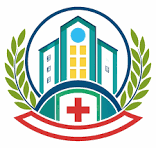

City Hospital Peshawar is a private hospital on Kohat Road offering 24/7 emergency, OPD, and specialist doctors for better patient care.
Dr. Rizwan completed his medical education from a well-known medical university and specialized in general medicine. During his studies, he developed a strong interest in patient care and internal medicine. He gained valuable clinical experience by working in different hospitals and medical departments. Currently, he is serving as a qualified physician at City Hospital, providing treatment to patients of all ages. He diagnoses and manages a wide range of common and complex medical conditions. Dr. Rizwan is appreciated for his professional skills and accurate medical advice. He always focuses on proper patient care and careful diagnosis before treatment. His calm behavior and dedication make patients feel comfortable during consultation. Due to his hard work and experience, he has built a strong reputation in the medical field.
Dr. Kashif Ullah completed his medical education from Kohat Medical College. He received his professional training in the field of medicine with a strong focus on pediatrics. From the beginning of his career, he showed great interest in child healthcare and treatment. He worked hard to gain experience in different medical environments and hospitals. Currently, he is serving as a Children Specialist (Pediatrics) at City Hospital. He is responsible for diagnosing and treating various childhood diseases and health issues. Dr. Kashif is known for his caring attitude and friendly behavior with young patients. He always focuses on providing the best possible treatment and medical care to children. Because of his dedication and experience, he has earned a good reputation in his field.